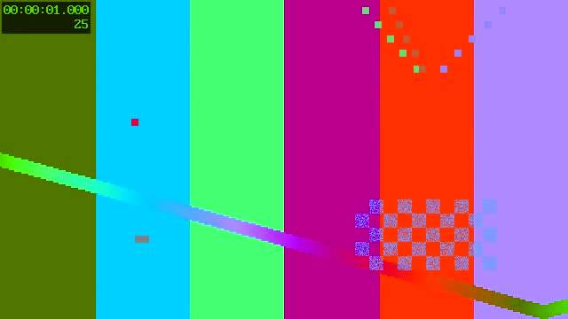
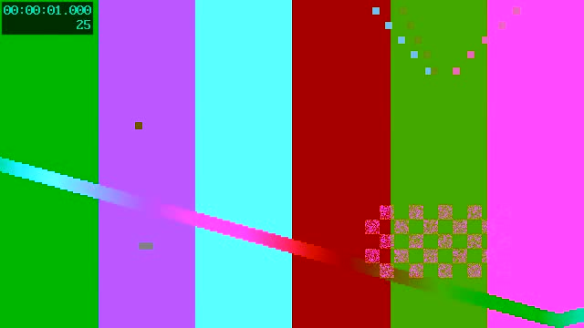
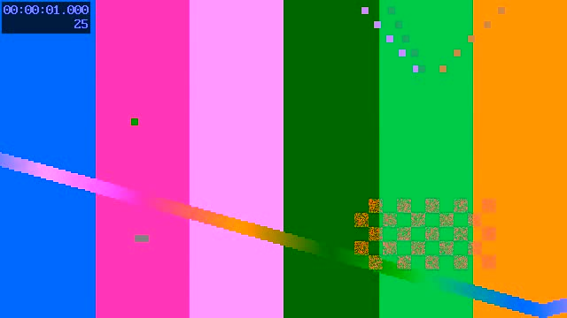
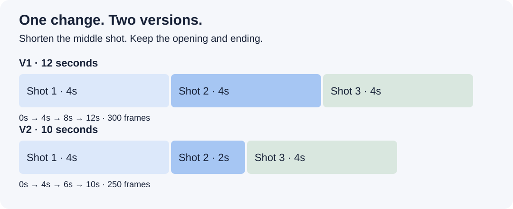

A REPRODUCIBLE EDITING EXAMPLEOne scene.
One precise revision.
Three clips become a 12-second cut. One comment changes it to 10 seconds. See the inputs, the plan and exactly what stays intact.
Generated test patterns. No personal footage, speech, music or service accounts. This demonstrates timing and revision mechanics, not autonomous storytelling.
01 · Inspect the three sources
Actual frames from the included clips. Each source is four seconds: 100 frames at 25 fps, 640 × 360, no audio.

Opening
shot-1.mp4 · keep all 100 frames
Middle
shot-2.mp4 · the shot we will shorten
Ending
shot-3.mp4 · preserve the source range
02 · Brief the agent
Read the skill and the story-to-cut example. Use the included synthetic clips. Explain the three-shot plan, then render V1 into a new temporary folder. Keep all source files unchanged. Use FFmpeg. Report duration, frame count and whether the output has audio.
A suggested prompt, not a recorded agent conversation. You set the goal; the agent reads the instructions and selects tools; the renderer follows explicit frame ranges.
With real footage, this is also where you answer questions that change the story. The agent must distinguish your memories from what is visible in a clip.
03 · Make the first cut
The first plan takes frames 0–99 from each clip: four seconds + four seconds + four seconds. The JSON uses an exclusive out-point: out: 100 means the last selected frame is 99.
Inspect V1 plan · Read the narrative example
04 · Apply one comment. Compare both cuts.
V1, 00:00:04:00: shorten the middle shot by two seconds. Preserve the first and last shots.

V1 · 12 seconds
300 frames · 25 fps · silentV2 · 10 seconds
250 frames · 25 fps · silentThe middle source out-point changes from 100 to 50. The final shot starts at second 6 instead of second 8; its selected source frames stay the same.
05 · Check before calling it done
| Check | Expected evidence |
|---|
| Duration | 300 → 250 frames, both 25 fps |
| Bounded change | Only the middle shot's out-point changes |
| Preservation | Opening and ending retain their source ranges |
| Actual output | Inspect the encoded clips and both cuts |
| Acceptance | Human review remains separate from a successful render |
The feedback record belongs to V1 and points to V2. The preferences file stays empty: one request to shorten a shot does not create a universal two-second rule.
06 · Reproduce it
Download the repository. Install Python 3.9+, FFmpeg and ffprobe, then run these commands from the repository root. Choose an output directory that does not yet exist.
python3 skills/family-travel-editor/scripts/project.py doctor --task preview
python3 examples/first-scene/make_demo.py --output /path/to/new-demo
Exact commands and editor import limits · Validation record
Then try one real scene
Provide your footage and preferred editor. Ask for a catalogue, the questions that affect the story, and a scene plan before editing. Review the cut; give a version, timecode and precise request. Keep previous versions and inspect the exported result.
The included renderer makes silent straight cuts. Audio mixing, titles, native editor operation and publication need appropriate tools and separate checks. The planning workflow also works with manual assembly in iMovie or CapCut.
Start your own scene on GitHub →